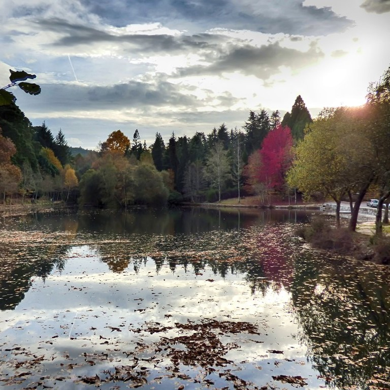

Rubén Gómez Dopazo
This is my website. Looks like you want to know more about me, so take a look at what I have to say.
I was born in Pontevedra
I was born in Lourizán, a little village in Pontevedra. I met my village as a landfill, rooten by the desinterest of the elites, who during Franco's regime decided to destroy the estuary and the biodiversity that lived in it. They built a motorway and a factory over the water, condemning the fauna, the flora and the neighbours who lived there, and those who would live there from then on. This fact taught me the importance of the fight for the defense of the environment.
